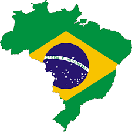
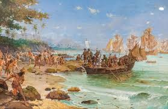
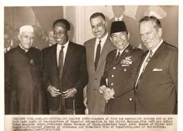
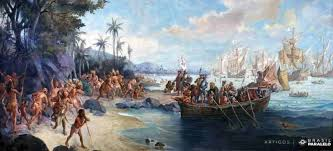
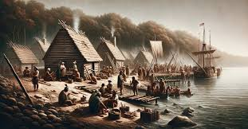

O que é Colonização?
Colonização é o processo pelo qual um país estabelece domínio sobre um território estrangeiro, criando uma colônia. Durante a colonização, os colonizadores impõem suas próprias práticas culturais, econômicas e políticas sobre a população nativa.
Principais Períodos de Colonização
- Colonização Antiga: Impérios antigos como Roma e Grécia estabeleceram colônias para expandir seus territórios e influências.
- Colonização Moderna: Entre os séculos XV e XIX, potências europeias como Portugal, Espanha, Inglaterra e França estabeleceram colônias nas Américas, África e Ásia.
Impactos da Colonização
A colonização teve profundos impactos culturais, econômicos e sociais. Embora tenha promovido o intercâmbio de culturas e recursos, também resultou na exploração e subjugação das populações nativas, destruição de culturas e línguas, e desigualdades que persistem até hoje.
Descolonização
O século XX foi marcado por movimentos de descolonização, onde muitas colônias conseguiram sua independência e começaram a reconstruir suas identidades nacionais. Exemplos notáveis incluem a independência da Índia em 1947 e a Revolução Argelina.
Colonização no Brasil
O Brasil foi colonizado por Portugal a partir de 1500. A colonização portuguesa teve um impacto duradouro na formação cultural, linguística e social do Brasil. A exploração econômica e o uso de mão-de-obra escrava são aspectos sombrios dessa história.
Legado da Colonização
O legado da colonização ainda é visível em muitos países. Questões como desigualdade social, conflitos étnicos e a luta por reconhecimento cultural são reflexos das estruturas coloniais que foram estabelecidas e que ainda persistem em muitas sociedades.